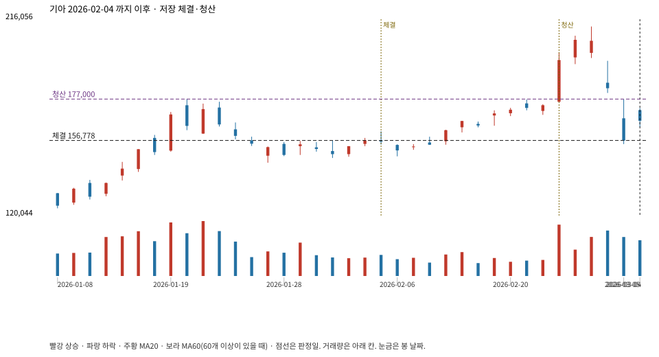

계좌를 다시 돌리지 않았다. 아래는 저장된 주문·체결·청산·비용·손익이다.

{
"case_id": "0f6a86a4e06bd33f",
"status": "closed",
"trade": {
"symbol": "000270.KS",
"signal_date": "2026-02-04",
"quantity": 78,
"entry": 156800,
"stop": 144040,
"target": 177000,
"planned_risk": 1024357.4624399972,
"reserved_cash": 12242630.399999999,
"fill": {
"date": "2026-02-05",
"price": 156778.35,
"fee": 12228.7113
},
"exit": {
"date": "2026-02-25",
"price": 177000,
"reason": "target",
"net_pnl": 1551253.9887000006,
"ambiguous_bar": false
}
},
"cost": "research fee 10bp each side, slippage 5bp; amounts below are the stored ledger, not a new run",
"chart": "c\/0f6a86a4e06bd33f.svg"
}